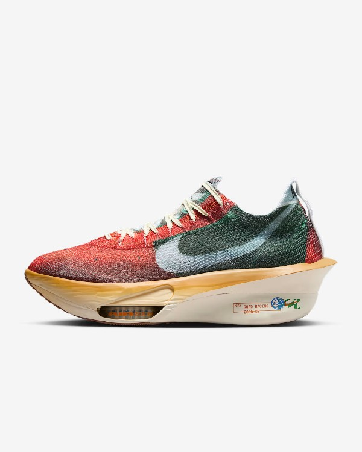
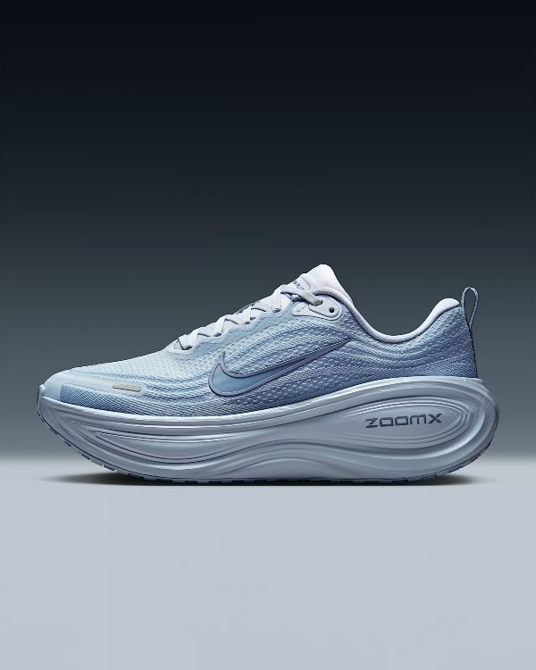
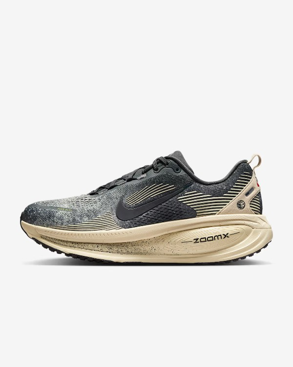
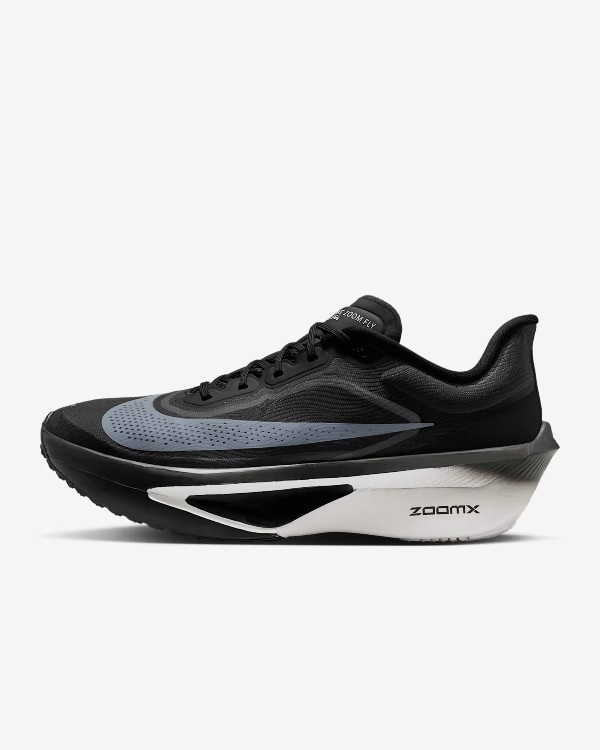
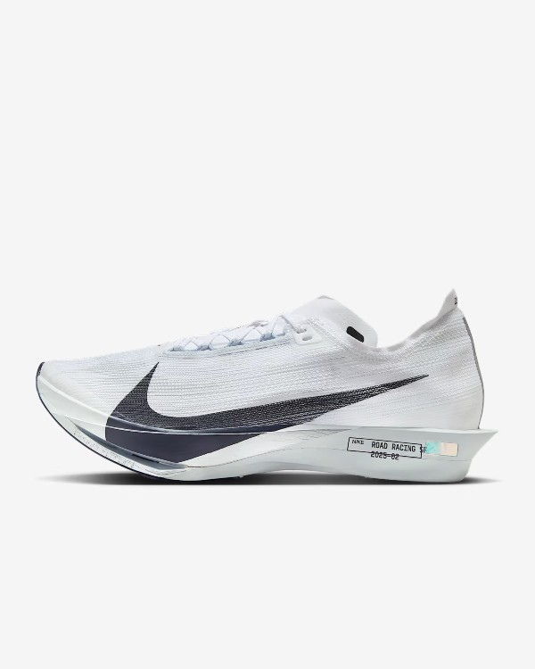

Shoes
Explore Our Exclusive Selection of Nike Shoes
Step into style and performance with our curated collection of Nike footwear. Whether you're chasing
your next personal best or looking for everyday comfort, our Nike selection has something for everyone.
From the iconic Air Max and Air Force 1 to the latest in React and Zoom technology, each pair combines
innovative design with unmatched comfort.We carry a wide range of Nike shoes for men, women, and kids —
including running shoes, basketball
sneakers, casual streetwear, and training footwear. Our selection features both timeless classics and
the newest releases, so you can stay ahead of the game in style and function. Looking for bold colors,
limited editions, or sleek minimalist designs? You'll find them here. Every pair we stock is 100%
authentic and chosen with quality and style in mind. Whether you're shopping for athletic performance,
all-day comfort, or the latest sneaker trends, you'll find the perfect Nike fit here.
Browse our Nike collection today and discover why it's one of the most trusted names in sportswear.
Great style, unbeatable performance — just do it.
Running Shoes
 Nike Alphafly 3 Premium $305
Fine-tuned for marathon speed, the Alphafly 3 Premium powers your run with three innovative technologies. A double dose of Air Zoom units, a full-length carbon fiber plate and a heel-to-toe ZoomX foam midsole help propel you forward as you conquer your next race. Nike Vomero Plus $180
Take maximum cushioning to the next level with the Vomero Plus. It provides an ultra-comfortable ride for every day runs thanks to a mountainous stack of full-length ZoomX foam, the most responsive foam in the industry. Plus, the engineered mesh upper is made of soft, breathable yarn for a comfortable fit.
 Nike Vomero 18 $165
Maximum cushioning in the Nike Vomero 18 provides a comfortable ride for everyday runs. Experience optimal comfort with lightweight ZoomX foam stacked on top of responsive ReactX foam in the midsole. And a redesigned traction pattern offers a smooth heel-to-toe transition.
 Nike Zoom Fly 6 $180
The Zoom Fly 6 is with you every step of your run. Lighter than the Zoom Fly 5, its responsive ZoomX foam adds energy return to each stride, while a carbon fiber Flyplate helps propel you to the finish line.
 Nike Streakfly 2 $190
The Streakfly 2 can help you out-kick the opposition on race day. This speedster now comes with a carbon fiber Flyplate, complementing the ultraresponsive ZoomX foam midsole and minimal upper you loved on the original. From the 10K to the mile, it can help you take your distances to the next level.